V záložke Hlavný sa nastavujú premenovávacie operácie.
Tu musí byť nastavené akékoľvek premenovanie.
[Tlačítka]
[Poradie operácií]
[Renaming Fields:
Vyhľadať a Nahradiť/Zmeniť/Presunúť
Vložiť
Zmeniť dĺžku
]
TLAČÍTKA:
Tlačítka fungujú vložením textu do textového poľa.
Po stlačení tlačítka Náhľad bude podľa textu vykonaná operácia.
Príklad, aktivovaním poľa Prefix a stlačením tlačítka
dátum, sa v poli objaví text ':dátum:', ktorý bude v každej
premenovávanej položke nahradený súčasným dátumom.
Toto poskytuje flexibilitu v kombinovaní jednotlivých operácií a textu.
Takže ak chcete mať oddeľovač medzi predponou a pôvodným menom,
tak po stlačení tlačítka zadajte znak '_', a pole bude potom obsahovať
':dátum:_', and assuming today is august 6, 1223, tak súbory budú premenované
na: 08-06-1223_file.ext
Zadať môžte ľubovoľný počet operácii a množstvo textu,
pokiaľ celková dĺžka nepresiahne 255 znakov.
Napríklad toto je validné zadanie:
:číslo:_nejaký text_:dátum:_:čas:_:stopa:-:skladateľ:-:názov:
Tlačítko podadresár vloží oddelovač adresárov do poľa
Adresár.
Oddeľovač sa objaví ako text ':/', v ostatných poliach nemá efekt.
Tlačítko číslovanie vloží číselnú sekvenciu.
Defaultne, číslovanie začína na 1, inkrementuje sa o 1,
a jednotlivé čísla sú zarovnané cifrou 0 až po najvyšší rád
(príklad, 100 položiek bude číslovaných 001, 002, atď.).
Všetky tieto nastavenia sa dajú meniť v záložke Číslovanie.
Tlačítka dátum a čas vkladajú dátum a čas v nastavenom formáte.
Defaultný formát dátumu je: MM-DD-YYYY, a času: HH.MM.SS (12 hodinový formát).
Obe použijú ako hodnotu súčasný dátum/čas.
Pre zmenu nastavení použite záložku Dátum a Čas.
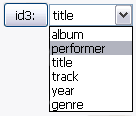
Tlačítko ID3 vloží ID3 informáciu z daného .mp3 súboru.
Konkrétnu časť ID3 informácie si vyberiete z menu vedľa tlačítka.
Ak mp3 súbor neobsahuje ID3 informáciu, tak na miesto nebude nič vložené.
Adresáre a súbory iného typu samozrejme ID3 informáciu neobsahujú.
PORADIE OPERÁCIÍ:
Poradie, v ktorom su jednotlivé operácie vykonávané aplikáciou.
Poradie operácií je odlišné od poradia v interface (ale viac logické, nie?),
tak som premýšľal, že ich vymenujem.
- Upraviť dľžku
- Vyhľadať a Nahradiť / Upraviť / Presunúť
- Predpona
- Prípona
- Vložiť
- Adresár
PREMENOVÁVACIE POLIA:
Toto je vnútorné srdce Métamorphose.
Tu musíte urobiť zmeny pre akékoľvek premenovanie.
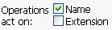
Tieto zaškrtávacie polia určujú, ktorá časť názvu položky bude modifikovaná.
Ak je zaškrtnuté 'Meno', tak operácie budú vykonávané
nad názvami adresárov a súborov.
Ak je zaškrtnutá prípona, tak budú modifikované typové prípony súborov.
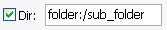
Toto umožňuje pridať adresár, do ktorého sa presunú premenovávané položky.
Podadresáre sa dajú pridávať tlačítkom 'podadresár'.
V tomto poli sa tiež dajú použiť všetky ostatné popísané tlačítka.
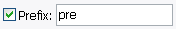
Pridať do výsledného názvu predponu.
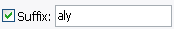
Pridať do výsledného názvu príponu.
Toto je mocný nástroj na prehľadávanie názvov a nahradzovanie nájdených
podreťazcov iným textom. V názvoch premenovávaných položiek môžte
vyhľadávať text pomocou regulárnych výrazov, alebo pozície.
Nájdený text potom môžte nahradiť iným textom, zmeniť veľkosť písmen,
alebo ho presunúť na inú pozíciu.
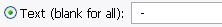
Text, ktorý sa má vyhľadávať. Môžte vložiť ľubovoľný znak,
takže pre hľadanie medzery jednoducho stlačte spacebar.
Ak je toto pole ponechané prázdne, tak sa zhoduje celý názov.
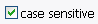
Vyhľadávanie textu bude rozlišovať veľkosť písmen.
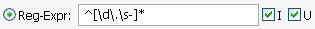
Vyhľadávanie regulárneho výrazu.
Every match will be acted upon.
Zaškrtnutím I bude vyhľadávanie rozlišovať veľkosť písmen,
zaškrtnutím U sa aktivuje Unicode mód (pre zhodu
s ne-ascii znakmi ako je 'é' pomocou zápisov ako je \w).
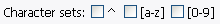
Vyhľadať regulárny výraz tvorený množinou znakov.
^ zhoda s ľubovoľným znakom, ktorý nie je v množine znakov.
[a-z] zhoda s všetkými abecednými znakmi (veľké aj malé písmená),
a [0-9] je zhoda na všetky čísla.
Množiny znakov sa dajú použiť bez zadania regulárneho vyrazu v textovom poli.
Inak je celý regulárny výraz tvorený takto:
'(regulárny výraz v poli) | (množiny znakov)'.
Taktiež [a-z] neznamená v skutočnosti znaky '[a-z]', ale je to '[^\W\d]'
pre správnu zhodu pri zapnutom Unicode móde.
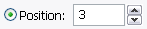
Hľadať od pozície.
Prvý znak, od ktorého hľadať.
0 je vždy prvý znak v názve.
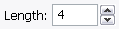
Počet znakov tvoriacich zhodu.
Pokiaľ je počet znakov viac ako dĺžka slova, tak to nevadí.
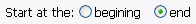
Rozhoduje, či sa zhoda počíta od začiatku názvu alebo od konca.
Ak od konca, tak hodnota v poli Pozícia sa automaticky
mení podľa hodnoty v poli Dĺžka.
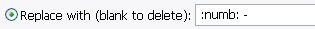
Nahradiť každý výskyt zadaným textom alebo operáciou.
Pri použití regulárnych výrazov môžte použiť spätné referencie
(zadaním "\1" bez úvodzoviek).
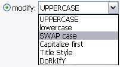
Zmeniť veľkosť písmen každého výskytu.
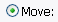
Presunúť prvú zhodu na vybranú pozíciu.
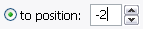
Presunúť na pevnú pozíciu. 0 znamená pred prvý znak názvu,
-1 za posledný znak.
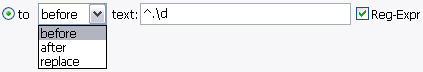
Použiť zadaný text ako pozíciu pre presun textu.
Nájdená zhoda sa dá vložiť pred textom alebo po texte,
alebo nahradiť textom.
Ak nie je nájdená zhoda, tak sa nič nevykoná.
Dajú sa použiť aj regulárne výrazy.
|
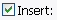
Použite toto na vloženie textu alebo operácie na zadanú pozíciu v názve.
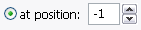
Špecifikuje absolútnu pozíciu, odkiaľ sa má text vkladať.
Začína sa od 0 a na konci začína od začiatku, takže 0 = pred prvý znak,
1 = pred druhý , -1 za posledný znak.
|
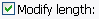
Zmena dľžky výsledného mena súboru rôznymi spôsobmi.
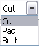
Ako upraviť dĺžku.
Zarovnať zvýši dľžku na zadanú veľkosť,
Skrátiť skráti dľžku na zadanú veľkosť,
a Oboje zarovnáva aj kráti na zadanú veľkosť.
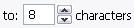
Mení dľžku na zadanú veľkosť.
Ak ste zvolili iba Zarovnať a dĺžka mena má zadanú alebo väčšiu veľkosť,
alebo ak meno je kratšie a je nastavené Skrátiť, tak sa s menom nič
nestane. S voľbou Oboje budú všetky mená rovnakej dĺžky.
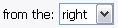
Smer modifikácie dĺžky mena súboru.
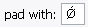
Toto je znak, ktorý sa používa na zarovnanie.
Môžte použiť ľubovoľný charakter, s ktorým dokáže pracovať váš počítač.
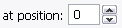
Dovoľuje zvoliť pozíciu, od ktorej sa má vkladať zarovnávací znak.
Ak je ponechaný na 0, tak to bude od prvého znaku vo vybranom smere.
Ak je na pozícii iné než 0, tak to funguje rovnako ako
vložiť na pozíciu (1 = druhý znak, -1 = posledný znak),
bez ohľadu na zvolený smer.
|